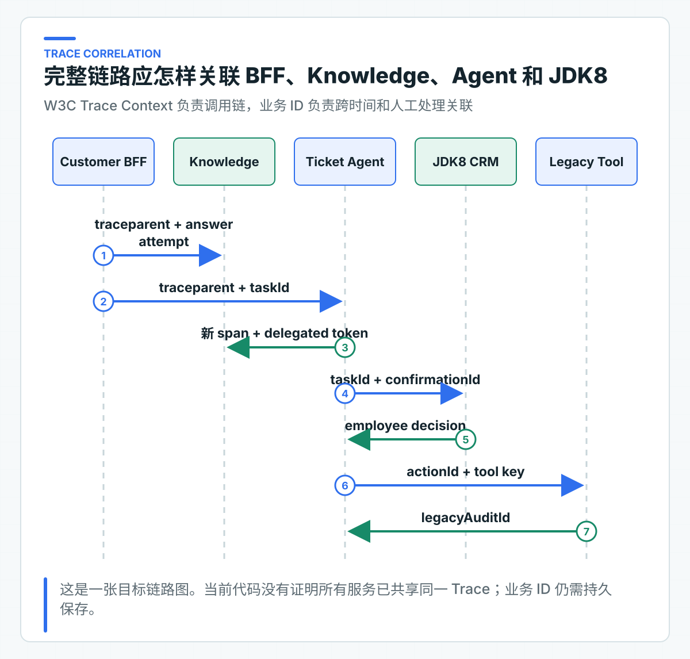

观测做到什么程度才够用：Trace、Correlation、Metric、日志和成本
线上有人反馈一次咨询等了 18 秒。团队接着要回答：时间花在检索、模型还是 Tool？同一时段 Token 为什么翻倍？如果远程调用超时，业务动作究竟有没有执行？一张 Prometheus Dashboard 或一份全量 Prompt 日志都无法独立回答这些问题。
项目把观测信号分成四类：Trace 还原单次调用链，Metric 观察总体趋势，Log 解释程序异常，Audit 记录业务动作与人工决定。Trace 是一次请求经过各服务时形成的调用链；Metric 是用于统计和告警的聚合指标；Audit 是不能由普通运行日志替代的业务审计。
四类信号的失败语义不同。Metric 只用于观察运行情况，不能因为指标库短暂异常就改写业务状态。高风险动作的必要 Audit 则属于业务记录，保存失败时需要停止执行或进入对账，不能只记一条错误日志后继续。
标题中的 Correlation 指使用 traceId、taskId、actionId 和 auditId 把不同请求与业务记录关联起来。这些信号的权限和保留周期并不相同。
当前代码先完成可独立验证的部分。Knowledge Service 用 Micrometer Observation 包裹知识操作；这里的 Observation 是对一次操作进行计时并携带观测上下文的统一 API。服务还会在回答中读取当前 traceId。Ticket Agent 记录规划与 Tool 指标，业务动作进入低敏 Audit。
这里的低敏是指审计只保留排查动作所需的状态、业务 ID 和有限说明，不复制问题正文或完整 Tool 参数。项目还没有用测试证明 BFF、Knowledge、Ticket Agent 和 JDK8 已形成完整 Trace，也没有把 Trace 与所有审计事件自动关联。
四类信号各自回答一类问题
Trace。 Trace 回答“一次请求经过了哪里”。一条咨询可能经过 Customer BFF、Knowledge Service、模型 Provider、Ticket Agent 和 Legacy Tool。每一段局部调用记录称为 Span，它应保存服务、操作、耗时、状态和少量关联 ID。
Metric。 Metric 回答“总体是否异常”。例如 Agent 规划次数、Tool 成功/拒绝/未知比例、Token 分布、并发 429、模型延迟和 RAG 拒答率。它适合固定低基数标签，不适合存每个 taskId。
Log。 Log 回答“程序具体哪里出错”。异常类、错误码、下游状态和 stack trace 可以进入受控日志；原始 Prompt、访问 Token 和完整客户数据不能为了排障默认打印。
Audit。 Audit 回答“谁在什么时候批准并执行了哪个业务动作”。它需要追加写、长期保留和权限控制，不能依赖可能采样的 Trace，也不能用普通日志轮转替代。
把四种信号全部写进一个 ELK 索引，短期看起来方便，长期会造成权限、成本和保留策略混乱。
Ticket Agent 当前记录的指标
MicrometerAgentTelemetry 记录三类 Meter，也就是 Micrometer 中的计数、分布或计时器：
java.ai.agent.plan
java.ai.agent.plan.tokens
java.ai.agent.tool
规划计数只使用 decision 与 finish_reason 标签。结束原因先映射到 stop、length、tool_calls 等有限集合，Provider 私有值统一记为 other，避免新值持续创建时间序列。Token 通过 DistributionSummary 按 decision 聚合。Tool 使用 Timer，标签为 tool 与 outcome。
TicketAgentOrchestrator 在每次规划后记录 decision 与 totalTokens，对只读 Tool 记录 succeeded 或 failed 及耗时。ToolConfirmationService 对写 Tool 记录 succeeded、rejected、uncertain 或 failed。
这些指标没有 taskId、tenant、subject、问题正文、Prompt 和模型自由文本。当前模型名保留在 Agent 审计中。生产接入 Trace 时，可以记录受控模型别名；若公司模型集合稳定，也可以把有限别名加入 Metric。
低基数标签控制监控成本
时序数据库会为每组标签创建独立时间序列。把 taskId 做标签，100 万任务就可能产生近 100 万序列；把用户问题做标签，基数几乎无限，还会泄露内容。
适合指标标签的字段：
service=knowledge-service
operation=answer
tool=QUERY_KNOWLEDGE
outcome=uncertain
decision=use_tool
error_class=timeout
适合 Trace 或日志的字段：
traceId
taskId
actionId
confirmationId
model version
downstream request id
敏感字段通常不应进入任何通用观测系统。确需排障时，使用受控业务引用查询原数据，或者临时开启经过审批的采样与脱敏，不要永久全量记录。
跨服务关联需要 Trace Context 与业务 ID

生产链路应使用 W3C Trace Context 传播 traceparent。traceparent 是跨服务传递 Trace 身份的标准 HTTP Header。Micrometer Tracing 与 OpenTelemetry Bridge 可以让 Spring HTTP 客户端和服务端创建 Span，业务代码不应另拼一套 trace-id Header。
但 Trace 可能被采样，也会按较短周期过期。跨人工确认可能间隔数小时，JDK8 CRM 的确认请求通常已经是新 Trace。因此还需要持久业务 ID：
- conversationId 与 attemptId 关联 C 端回答；
- taskId 关联 Agent 生命周期；
- confirmationId 关联人工决策；
- actionId 关联远程写意图；
- legacyAuditId 关联最终业务系统。
Agent 审计已经保存 taskId、actionId 和下游 auditId，Knowledge 回答也能取得当前 traceId。还缺的部分是让 BFF、Ticket Agent 和 JDK8 的客户端统一传播 traceparent，并在 Span 中加入必要的业务 ID。是否真正打通，要用集成测试或真实 Trace 截图确认上下游属于同一条调用链；POM 中存在 tracing 依赖本身不构成验证结果。
Observation 包裹边界而不侵入业务规则
Knowledge Service 通过 KnowledgeAnswerTelemetry 业务端口包装操作，基础设施实现使用 Micrometer Observation。应用层只知道“观察一次知识操作”，不依赖 Prometheus 或 OTel API。
Ticket Agent 使用 AgentTelemetry 端口，Orchestrator 和确认服务记录业务事件，MicrometerAgentTelemetry 负责 Meter 名称和标签。测试可使用 NOOP，不需要启动监控系统。
这种分层避免在每个业务方法里散落 meterRegistry.counter(...)，也便于统一标签。Telemetry 端口仍应保持小而具体，不能演变成通用 record(String, Map<String,String>)，否则任意字段都可能进入指标。
从用户体验和业务风险选择核心指标
下面是生产监控建议。当前代码只实现了其中一部分，不应把清单等同于现有 Dashboard。
模型与回答
- 请求数、错误率、p50/p95/p99；
- TTFT（首个 Token 到达时间）与完整响应时长；
- Prompt、Completion、Total Token；
- finish reason 分布；
- 结构化输出失败和业务校验失败；
- 拒答率与引用缺失率。
RAG
- 检索耗时、候选数、TopK；
- Recall/HitRate/MRR 的离线趋势；
- ACL 拒绝与空召回；
- Rerank 调用率和收益分组；
- 索引任务积压、租约超时、死信。
Agent
- 每任务规划步数；
- decision 与 Tool 分布；
- WAITING_CONFIRMATION 数量和等待时长；
- Tool succeeded/rejected/uncertain；
- Agent Run 429；
- STEP_BUDGET_EXCEEDED；
- 尚未完成对账的 UNKNOWN 数量和持续时间。
业务结果
- C 端解决率与转人工率；
- 人工批准/拒绝比例；
- 重复幂等命中和冲突；
- 工单 SLA；
- 最终业务动作成功和对账异常。
技术指标与业务指标要能通过 taskId 等关联，但不要把客户维度直接做 Metric 标签。
按模型与场景统计 Token 成本
当前 Agent 指标记录 total token 分布，还没有实现版本化价格表和成本报表。生产需要在 Provider 返回 usage 后保存 prompt、completion 和 total token，再使用受控价目版本计算：
estimatedCost = promptTokens * promptUnitPrice
+ completionTokens * completionUnitPrice
价格、币种和生效时间会变化，不能把公式中的单价永久写死。公司可以按模型别名维护版本化价格表，报告同时保留原始 Token。
成本指标应按服务、业务用例、模型别名和环境聚合。按用户 ID 聚合可能涉及隐私和高基数；需要计费归属时，在业务数据仓库离线计算更合适。
Token 激增告警要结合质量和流量。调用量增长导致总成本上升是正常现象；单请求 Token、步骤数或重试放大突然上升才更接近工程异常。
日志、管理端点与告警
日志只保留排障所需信息
生产结构化日志可以记录错误码、异常类型、操作名、有限状态、下游服务、耗时、traceId 和业务关联 ID。谨慎记录参数指纹或数量，避免完整内容。当前测试没有扫描这些日志字段，因此下面是日志设计规则，不是已经完成的泄露验证。
这些内容通常禁止：
- Authorization、API Key、Cookie；
- 完整 Prompt 和 Tool 输出；
- 手机号、身份证、地址、支付信息；
- 上传文档正文；
- 模型原始响应和未知 HTML 错误页。
结构化日志的字段 Schema 也要评审。把所有对象 toString() 打出来会绕过字段级脱敏。异常 handler 返回给用户的 message 与内部日志也应分开。
受控暴露 Prometheus 端点
服务的 application.yml 注册 health,prometheus 端点，/actuator/env 没有暴露。注册端点不等于允许匿名抓取：Security 只匿名开放 health，本地访问 Prometheus 会得到 401。生产接入再使用独立 management port、内网或 ServiceMonitor，并为监控身份配置明确授权和网络策略。
不要把 Prometheus 端点开放到公网后只依赖“指标里没有密码”。指标会暴露服务名、工具、错误和容量信息，也属于内部运行数据。
告警同时考虑比例与流量
告警应对应可执行动作。示例：
- Agent Run 429 持续 5 分钟：检查并发、下游延迟和实例容量；
EXECUTION_UNCERTAIN新增：立即进入业务对账；- 高风险 Tool 拒绝率突增：检查业务状态、权限或新模型路径；
- p95 上升且 Tool 延迟稳定：检查模型或检索；
- Token/任务突增：检查步数、Prompt 和重复调用；
- 跨租户 ACL 拒绝出现异常来源：检查调用方身份。
仅凭 CPU 高或错误率高报警，值班人仍要花很久定位业务影响。告警描述应包含 Dashboard、Runbook 和责任服务。
指标与管理端点怎样暴露
仓库回归检查 Meter 名称、未知 Provider 结束原因的低基数归类和管理端点注册边界。指标组件抛出异常时，已经形成的 Agent 任务结果不能被改写。
启动 TicketAgentServiceApplication.main()，再打开 production-learning-journey.http。运行 04-prometheus-is-not-public，响应应为 401。这个结果说明管理端点没有匿名暴露；接入监控时再为抓取身份建立专用网络和授权。随后用指标后端确认抓取、Dashboard 和告警，不把“HTTP 能打开”当成观测完成。
观测的目标是让一次异常能从总体趋势钻取到业务动作，同时不制造新的敏感数据仓库。监控结果还要用于制定故障处理规则：哪些请求可以重试，Agent 并发满时怎样快速失败，写操作为什么必须保留 UNKNOWN。